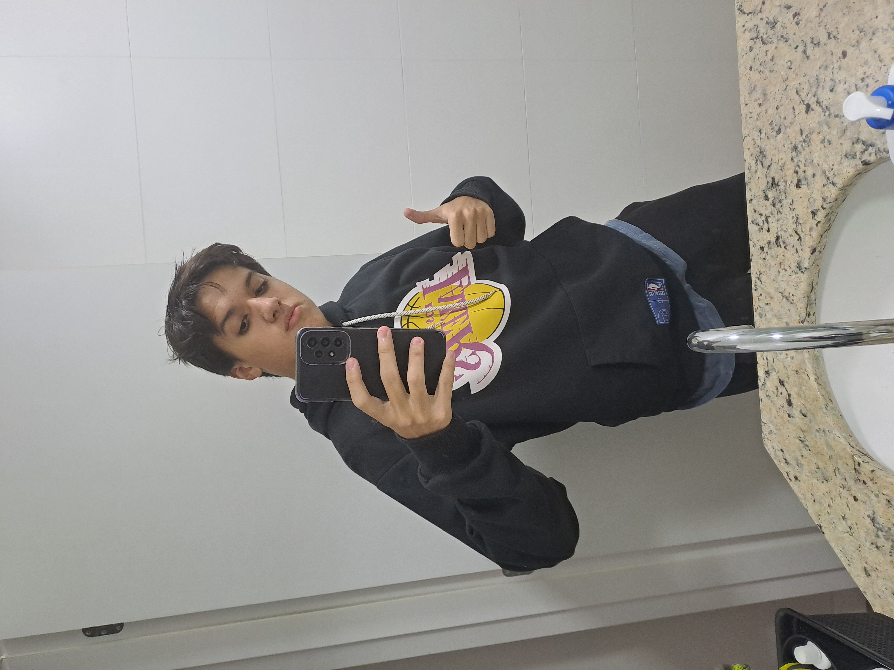
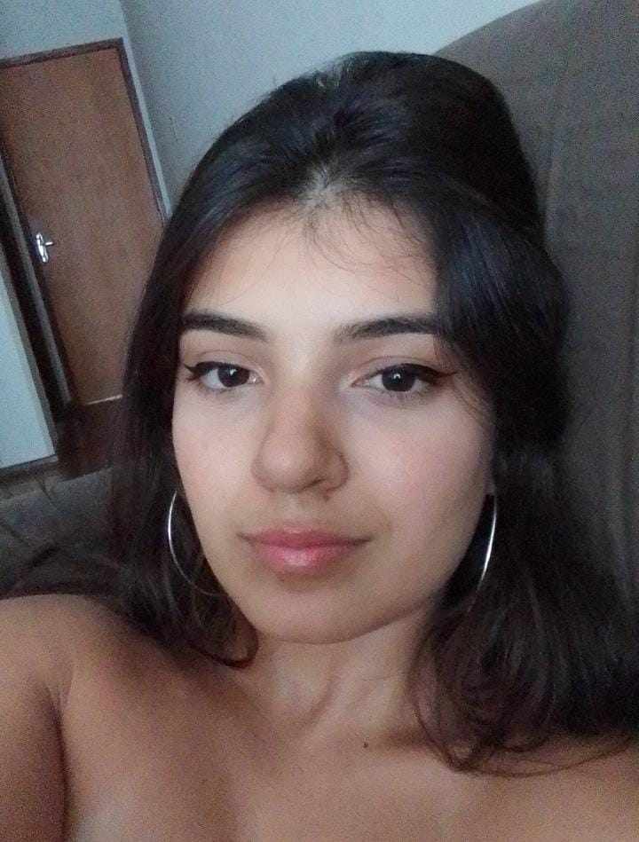

QUEM SÃO OS SUPERNOVAS?
 Messias, que atuou na formação dos códigos dos gráficos em python e do modelo do sistema solar
Messias, que atuou na formação dos códigos dos gráficos em python e do modelo do sistema solar

Tadeu, desenvolvedor da interface e do webdesign que esse projeto envolve, incluindo essa própria página, usando de HTML e CSS
Enzo, que desenvolveu a logo do nosso grupo, "Os Supernovas", e estudou as funções certas para serem aplicadas em cada caso de programação

Luana, montou os slides da apresentação
 Lucas, que saiu no meio do semestre, ele está nos nossos corações
Lucas, que saiu no meio do semestre, ele está nos nossos corações